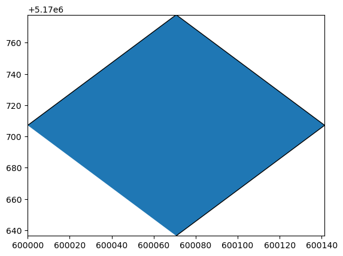
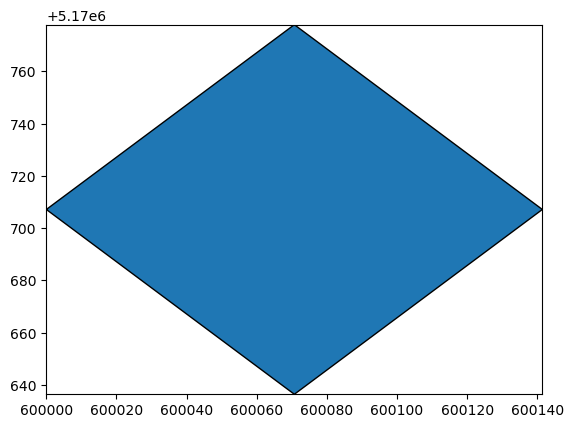
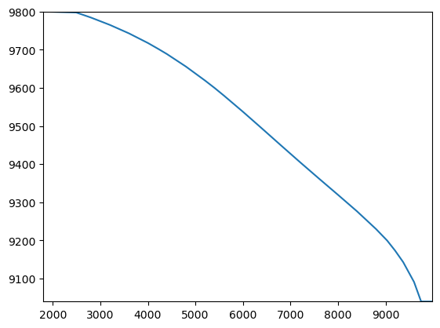
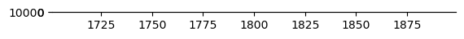

Note
Working with shapefiles
This notebook shows some lower-level functionality in flopy for working with shapefiles including: * recarray2shp convience function for writing a numpy record array to a shapefile * shp2recarray convience function for quickly reading a shapefile into a numpy recarray * utils.geometry classes for writing shapefiles of model input/output. For example, quickly writing a shapefile of model cells with errors identified by the checker * examples of how the Point and
LineString classes can be used to quickly plot pathlines and endpoints from MODPATH (these are also used by the PathlineFile and EndpointFile classes to write shapefiles of this output)
[1]:
import os
import sys
import shutil
from tempfile import TemporaryDirectory
import numpy as np
import matplotlib as mpl
import matplotlib.pyplot as plt
import warnings
# run installed version of flopy or add local path
try:
import flopy
except:
fpth = os.path.abspath(os.path.join("..", ".."))
sys.path.append(fpth)
import flopy
from flopy.utils.geometry import Polygon, LineString, Point
from flopy.export.shapefile_utils import recarray2shp, shp2recarray
from flopy.utils.modpathfile import PathlineFile, EndpointFile
from flopy.utils import geometry
warnings.simplefilter("ignore", UserWarning)
print(sys.version)
print("numpy version: {}".format(np.__version__))
print("matplotlib version: {}".format(mpl.__version__))
print("flopy version: {}".format(flopy.__version__))
3.10.10 | packaged by conda-forge | (main, Mar 24 2023, 20:08:06) [GCC 11.3.0]
numpy version: 1.24.3
matplotlib version: 3.7.1
flopy version: 3.3.7
write a numpy record array to a shapefile
[2]:
temp_dir = TemporaryDirectory()
workspace = temp_dir.name
m = flopy.modflow.Modflow("toy_model", model_ws=workspace)
botm = np.zeros((2, 10, 10))
botm[0, :, :] = 1.5
botm[1, 5, 5] = 4 # negative layer thickness!
botm[1, 6, 6] = 4
dis = flopy.modflow.ModflowDis(
nrow=10, ncol=10, nlay=2, delr=100, delc=100, top=3, botm=botm, model=m
)
set coordinate information
[3]:
grid = m.modelgrid
grid.set_coord_info(xoff=600000, yoff=5170000, crs="EPSG:26715", angrot=45)
[4]:
chk = dis.check()
chk.summary_array
DIS PACKAGE DATA VALIDATION:
2 Errors:
2 instances of zero or negative thickness
Checks that passed:
thin cells (less than checker threshold of 1.0)
nan values in top array
nan values in bottom array
[4]:
rec.array([('Error', 'DIS', 1, 5, 5, -2.5, 'zero or negative thickness'),
('Error', 'DIS', 1, 6, 6, -2.5, 'zero or negative thickness')],
dtype=[('type', 'O'), ('package', 'O'), ('k', '<i8'), ('i', '<i8'), ('j', '<i8'), ('value', '<f8'), ('desc', 'O')])
make geometry objects for the cells with errors
geometry objects allow the shapefile writer to be simpler and agnostic about the kind of geometry
[5]:
get_vertices = (
m.modelgrid.get_cell_vertices
) # function to get the referenced vertices for a model cell
geoms = [Polygon(get_vertices(i, j)) for i, j in chk.summary_array[["i", "j"]]]
[6]:
geoms[0].type
[6]:
'Polygon'
[7]:
geoms[0].exterior
[7]:
((600000.0, 5170707.106781187),
(600070.7106781186, 5170777.817459305),
(600141.4213562373, 5170707.106781187),
(600070.7106781186, 5170636.396103068))
[8]:
geoms[0].bounds
[8]:
(600000.0, 5170636.396103068, 600141.4213562373, 5170777.817459305)
[9]:
geoms[0].plot() # this feature requires descartes
[9]:
<Axes: >

write the shapefile
the projection (.prj) file can be written using an epsg code
or copied from an existing .prj file
[10]:
from pathlib import Path
recarray2shp(
chk.summary_array, geoms, os.path.join(workspace, "test.shp"), crs=26715
)
shape_path = os.path.join(workspace, "test.prj")
wrote ../../../home/runner/work/flopy/flopy/.docs/Notebooks
[11]:
shutil.copy(shape_path, os.path.join(workspace, "26715.prj"))
recarray2shp(
chk.summary_array,
geoms,
os.path.join(workspace, "test.shp"),
prjfile=os.path.join(workspace, "26715.prj"),
)
wrote ../../../home/runner/work/flopy/flopy/.docs/Notebooks
read it back in
flopy geometry objects representing the shapes are stored in the ‘geometry’ field
[12]:
ra = shp2recarray(os.path.join(workspace, "test.shp"))
ra
[12]:
rec.array([('Error', 'DIS', 1, 5, 5, -2.5, 'zero or negative thickness', <flopy.utils.geometry.Polygon object at 0x7f90c9d4a650>),
('Error', 'DIS', 1, 6, 6, -2.5, 'zero or negative thickness', <flopy.utils.geometry.Polygon object at 0x7f90c9d4a3e0>)],
dtype=[('type', 'O'), ('package', 'O'), ('k', '<i8'), ('i', '<i8'), ('j', '<i8'), ('value', '<f8'), ('desc', 'O'), ('geometry', 'O')])
[13]:
ra.geometry[0].plot()
[13]:
<Axes: >

Other geometry types
Linestring
create geometry objects for pathlines from a MODPATH simulation
plot the paths using the built in plotting method
[14]:
pthfile = PathlineFile("../../examples/data/mp6/EXAMPLE-3.pathline")
pthdata = pthfile._data.view(np.recarray)
[15]:
length_mult = 1.0 # multiplier to convert coordinates from model to real world
rot = 0 # grid rotation
particles = np.unique(pthdata.particleid)
geoms = []
for pid in particles:
ra = pthdata[pthdata.particleid == pid]
x, y = geometry.rotate(
ra.x * length_mult, ra.y * length_mult, grid.xoffset, grid.yoffset, rot
)
z = ra.z
geoms.append(LineString(list(zip(x, y, z))))
[16]:
geoms[0]
[16]:
<flopy.utils.geometry.LineString at 0x7f910c15bb50>
[17]:
geoms[0].plot()
[17]:
<Axes: >

[18]:
fig, ax = plt.subplots()
for g in geoms:
g.plot(ax=ax)
ax.autoscale()
ax.set_aspect(1)

Points
[19]:
eptfile = EndpointFile("../../examples/data/mp6/EXAMPLE-3.endpoint")
eptdata = eptfile.get_alldata()
[20]:
x, y = geometry.rotate(
eptdata["x0"] * length_mult,
eptdata["y0"] * length_mult,
grid.xoffset,
grid.yoffset,
rot,
)
z = eptdata["z0"]
geoms = [Point(x[i], y[i], z[i]) for i in range(len(eptdata))]
[21]:
fig, ax = plt.subplots()
for g in geoms:
g.plot(ax=ax)
ax.autoscale()
ax.set_aspect(2e-6)

[22]:
try:
# ignore PermissionError on Windows
temp_dir.cleanup()
except:
pass